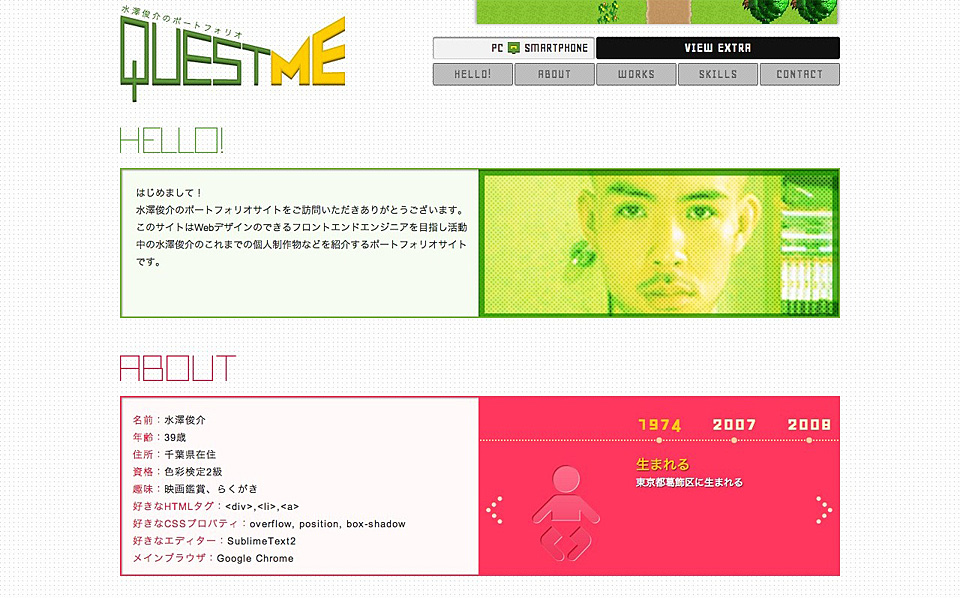

 記事内スタイル一覧 投稿日時 : 2013年04月20日 タグ : JavaScript ご覧頂いている水澤俊介のポートフォリオサイトです。作品を紹介するとともに、ポートフォリオサイト自体で「自分や自分ができることを伝える」というテーマを『QUEST ME』というタイトルに込めて制作しました。 レスポンシブにせず、スマートフォンに最適化したサイトもあわせて作りました。 続きを読む
記事内スタイル一覧についてかんがえた記事内スタイル一覧についてかんがえた 投稿日時 : 2013年04月20日 タグ : JavaScript ここに最新のブログ記事が入ります。ここに最新のブログ記事が入ります。ここに最新のブログ記事が入ります。ここに最新のブログ記事が入ります。ここに最新のブログ記事が入ります。ここに最新のブログ記事が入ります。ここに最新のブログ記事が入ります。ここに最新のブログ記事が入ります。 続きを読む
記事内スタイル一覧についてかんがえた記事内スタイル一覧についてかんがえた記事内スタイル一覧についてかんがえた記事内スタイル一覧についてかんがえた 投稿日時 : 2013年04月20日 タグ : JavaScript ここに最新のブログ記事が入ります。ここに最新のブログ記事が入ります。ここに最新のブログ記事が入ります。 続きを読む